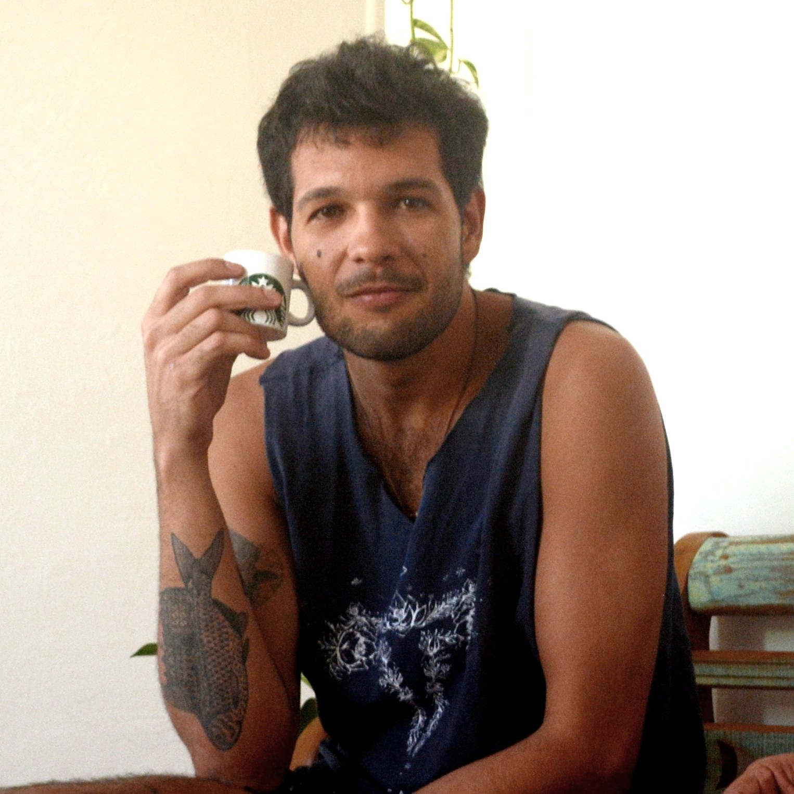

Luiz Antonio Alves dos Santos
- Seção 1
- Seção 2
- Seção 3
- Seção 4

Natural do Rio de Janeiro, descendente de família capixaba/recifense. Essa é a primeira de muitas junções que me compõem.
- Baterista
- Desenhista/pintor/ilustrador
- Engenheiro mecânico
- Pai de plantas
- Entusiasta de video clipes, spotify e netflix
- Técnico em mecânica
- Holding de bandas
- Câmera man
- Nadador desbravador de ilhas
- Observador e admirador dos sinais e mudanças da vida
- Cozinheiro pós pandemia
Para saber mais sobre mim:
Linkedin
Luiz